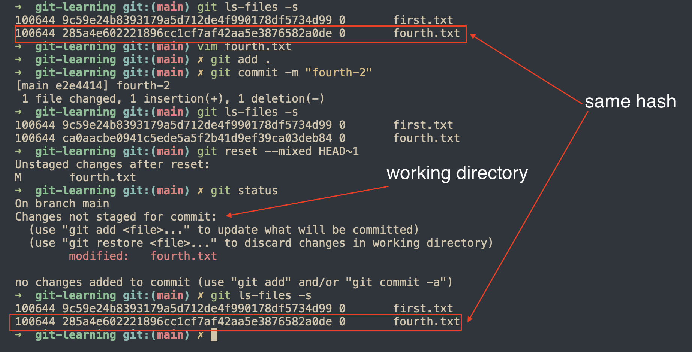

Git command: git reset
2025/01/19
After receiving some feedback from a friend. I have some updates on this post.
git ls-files / reset
To begin with this post, let's explore the command using to inspect git's staging area first.
$ git ls-files -s
100644 9c59e24b8393179a5d712de4f990178df5734d99 0 first.txt
This command show the detail information of files in staging area including hash and file path.
git reset command provides 3 options to interact with commit history and working directory, they will affect to different area of git.
--soft: affect history tree only.--mixed: affect history tree and staging area, it's default option.--hard: affect history tree, staging area and working directory.
Note: working directory is a single checkout of one version of the git project, these files has been already added to git, they're different from the untracked ones.
--hard
Syntax:
$ git reset --hard HEAD~n
// or
$ git reset --hard <commit-hash>
This is the most dangerous option because it will discard all your changes pending in staging area, working directory and commits as well . Use git log to view the commit history.
Related knowledge:
git reflogcan recover changes from reset commits, but not ones in staging area, working directory.
Hereafter, git log will refer to following command:
git log --pretty="%C(Yellow)%h %C(reset)%ad (%C(Green)%cr%C(reset))%x09 %C(Cyan)%an: %C(reset)%s" --date=short -7
The current project has 1 commit with message first.
$ git log
047536a 2025-01-19 (8 minutes ago) dntam00: first
To demonstrate how --hard option works, let's do the following steps:
- Adding 2 commits to history.
- Update 1 file and stage it, after that, update this one again.
- Create 1 new file and don't add it to git.
After that, verify the status of project with git log and git status.
git log:
$ git log
1a11485 2025-01-19 (3 minutes ago) dntam00: third
32abec3 2025-01-19 (4 minutes ago) dntam00: second
047536a 2025-01-19 (15 minutes ago) dntam00: first
git status:
$ git status
On branch main
Changes to be committed:
(use "git restore --staged <file>..." to unstage)
modified: third.txt
Changes not staged for commit:
(use "git add <file>..." to update what will be committed)
(use "git restore <file>..." to discard changes in working directory)
modified: third.txt
Untracked files:
(use "git add <file>..." to include in what will be committed)
fourth.txt
2 above commands show the status of current project:
3 commits.third.txtis in staging area and working directory, it means that there is some changes have been made to this file since the last time it has been added to staging area.fourth.txtis in project and not tracked by git.
With the status above, if we run command:
git reset --hard HEAD~2
2 recently added commits and all changes in staging area and working directory will be discared, the result is:
git log:
047536a 2025-01-19 (19 minutes ago) dntam00: first
git status:
$ git status
On branch main
Untracked files:
(use "git add <file>..." to include in what will be committed)
fourth.txt
nothing added to commit but untracked files present (use "git add" to track)
fourth.txt is still being present because it has not been added to git, git leaves these file untouch.
--mixed
This option resets the history and staging area to target commit (we could verify the status of staging area by command git ls-files -s mentioned above). Any file which is difference from the state of staging area at target commit will be moved to working directory.
From the state of git folder after running command in --hard part, we add fourth.txt to git and create a new commit for this change, then run command git reset with --mixed option
$ git add fourth.txt
$ git commit -m "fourth"
$ git reset --mixed HEAD~1
Verify result:
git log: 1 remaining commit.
047536a 2025-01-19 (47 minutes ago) dntam00: first
git status: staging area is empty and there is 1 untracked file.
$ git status
On branch main
Untracked files:
(use "git add <file>..." to include in what will be committed)
fourth.txt
nothing added to commit but untracked files present (use "git add" to track)
git ls-files -s:
$ git ls-files -s
100644 9c59e24b8393179a5d712de4f990178df5734d99 0 first.txt
The result is very aligned with description above. At commit first - 047536a, we don't have file fourth.txt, --mixed option will reset both commit history and staging area to the target commit, so git removes file fourth.txt from tracking, fourth.txt is not tracked by git anymore, the staging area does not have any ready-files to be committed because theses changes has been commited to first commit first - 047536a.
So what will happen if the fourth.txt file has been committed and modified in the next commit? The answer is file fourth.txt will be put in working directory.

Usage: We could use this option to reset commit and keep all changes from
HEAD~ncommit toHEAD(state of project before applying git reset command) to prepare for new commit, because these changes is put into working area so you could decide which files will be put into next commit.
--soft
This option reset the commit history to target commit, keep staging area untouched, so the the result is all files commited in range HEAD~n to HEAD will be put in staging area.
We will use the git folder after running commands in --hard option section again to demonstrate how option --soft works.
$ git add fourth.txt
$ git commit -m "fourth"
$ git reset --soft HEAD~1
The file fourth.txt now is added to staging area instead of working area like --mixed option.
$ git status
On branch main
Changes to be committed:
(use "git restore --staged <file>..." to unstage)
new file: fourth.txt
Usage: We could use this option to reset commits and keep all changes from
HEAD~ncommit toHEADand commit again without the need ofgit add.
References
[1] https://www.atlassian.com/git/tutorials/undoing-changes/git-reset